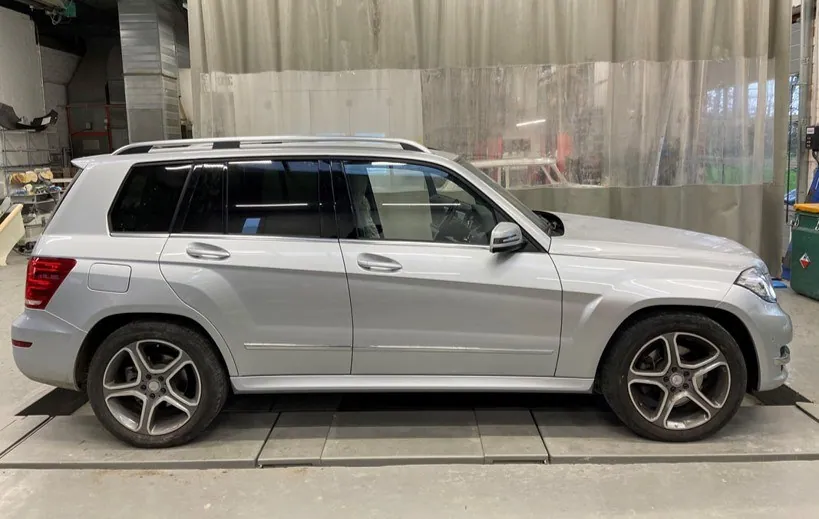
Autoschade
Herstel van alle automerken, van een kleine kras tot zware schade na een ongeval.
Bestek aanvragenIn Belsele herstellen we al drie generaties lang schade aan wagens, moto's, campers en vrachtwagens. Van de eerste foto tot de verzekering en de vervangwagen: je hebt één aanspreekpunt en je wordt gezien als mens, niet als dossiernummer.
“Mijn auto was binnen één dag hersteld, en ik werd heel goed op de hoogte gehouden.”
Ellen De Keirsmaeker, op Google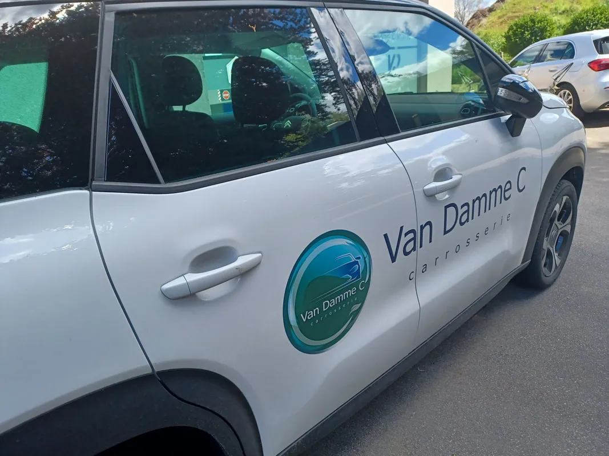
Kies je voertuig en zie meteen wat we ervoor kunnen doen. Alle merken zijn welkom.
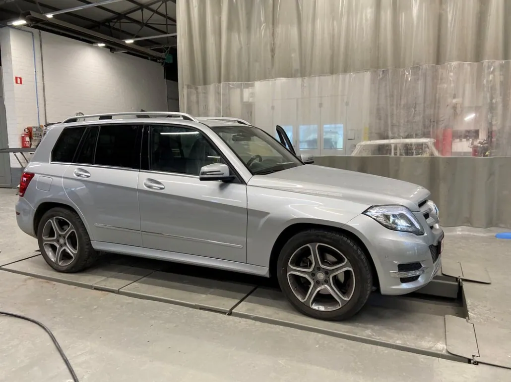
Een kras, een deuk of een stevige aanrijding: we herstellen schade aan alle merken. Duurzaam, met respect voor het origineel, en met twee jaar garantie op de herstelling.
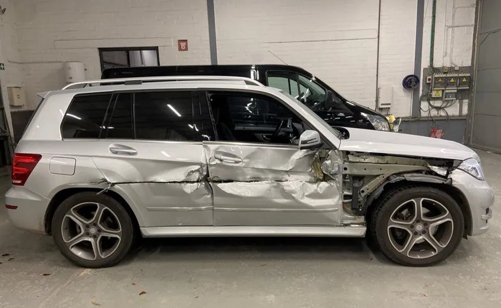
Ook grotere wagens en bedrijfsvoertuigen passen bij ons zonder problemen. Heb je de wagen nodig voor je werk? Vraag gerust naar een vervangwagen.
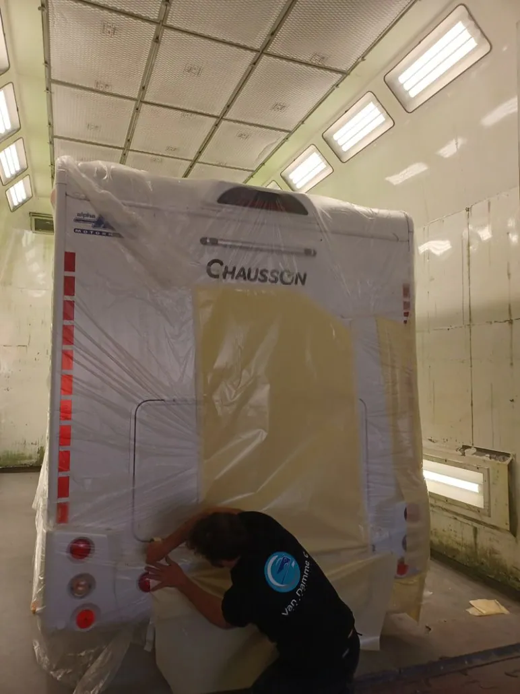
Onze spuitcabine is groter dan gemiddeld. Daardoor kunnen we ook campers en lichte vracht volledig binnen spuiten, in één stuk.
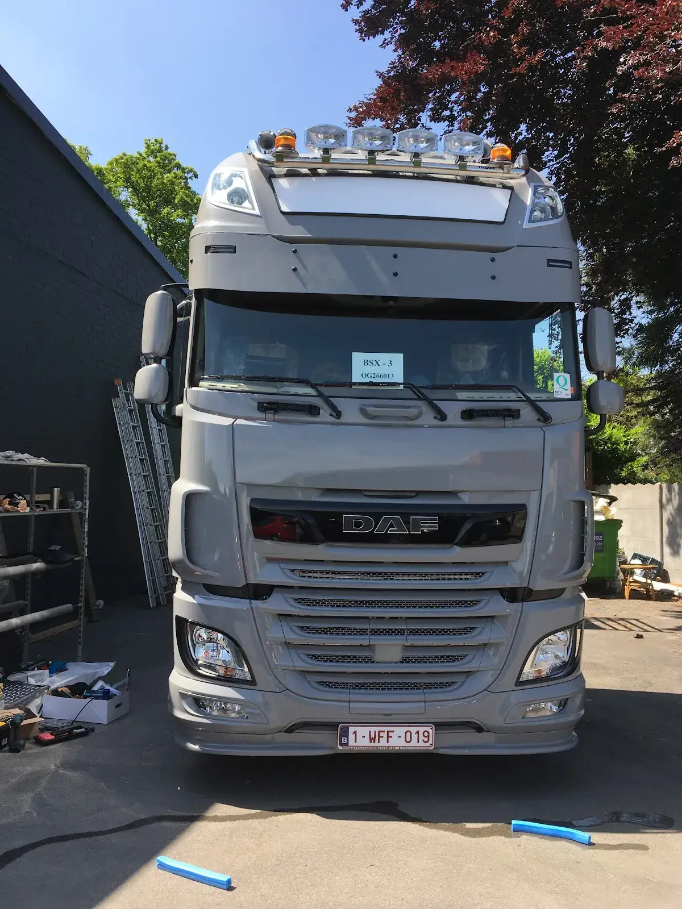
Ook vrachtwagens krijgen hier een volledige herstelling en een nieuwe laklaag.
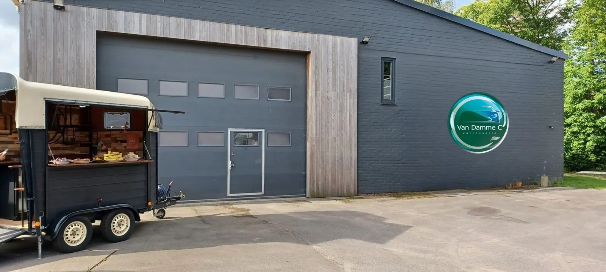
Een kras in je tank of een beschadigde kuip? Ook motorfietsen kan je bij ons binnenbrengen voor herstelling en lakwerk.
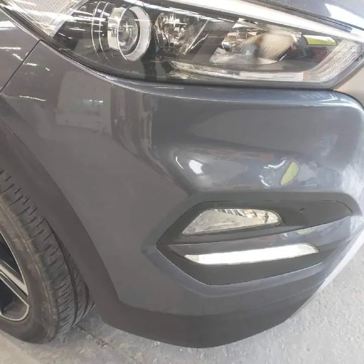
Stoeprandschade aan je velgen, een barst in je autoruit of een deukje zonder lakschade: ook dat herstellen we, uitdeuken zonder spuiten inbegrepen.
Een ongeval hoeft geen ramp te zijn. We houden het rustig en duidelijk, en zeggen eerlijk wat de beste keuze is.
Geen oppervlakkige herstellingen die nadien tegenvallen. Alles wordt degelijk en duurzaam hersteld, met de nieuwste technieken.

Herstel van alle automerken, van een kleine kras tot zware schade na een ongeval.
Bestek aanvragenGroter dan de meeste cabines, dus ook voor campers, lichte vracht en vrachtwagens.
Bestek aanvragen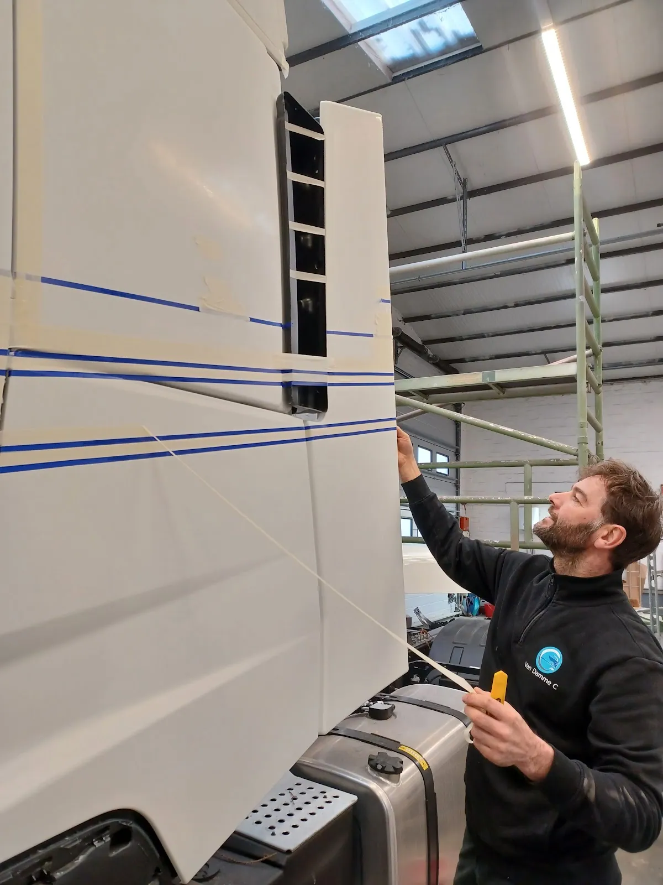
Afplakken, voorbereiden en spuiten in de juiste kleur, zodat je niets meer van de schade ziet.
Bestek aanvragenKleine deukjes eruit halen zonder dat de lak beschadigd raakt. Snel en voordelig.
Bestek aanvragen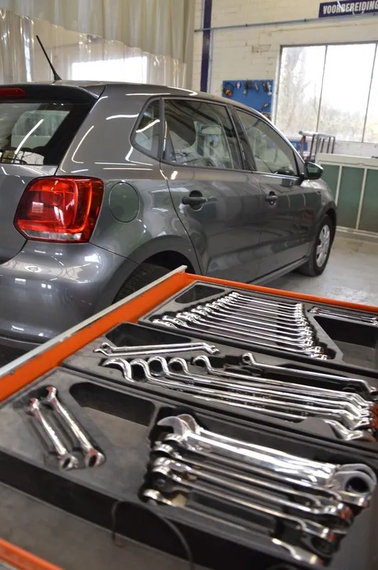
Een barst in je ruit of schade aan je velgen na een stoeprand. Ook dat herstellen we.
Bestek aanvragenTerwijl je wagen bij ons staat, rijd jij gewoon verder. Vraag ernaar bij je afspraak.
Vraag ernaarEen Mercedes met zware schade aan de zijkant, en hoe hij weer de deur uit ging.
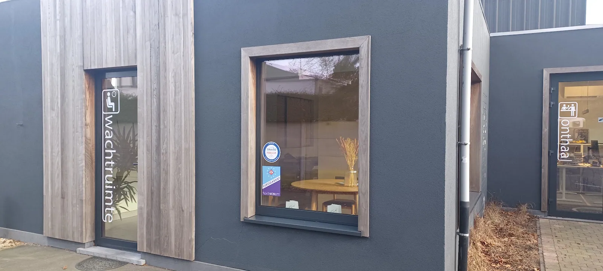
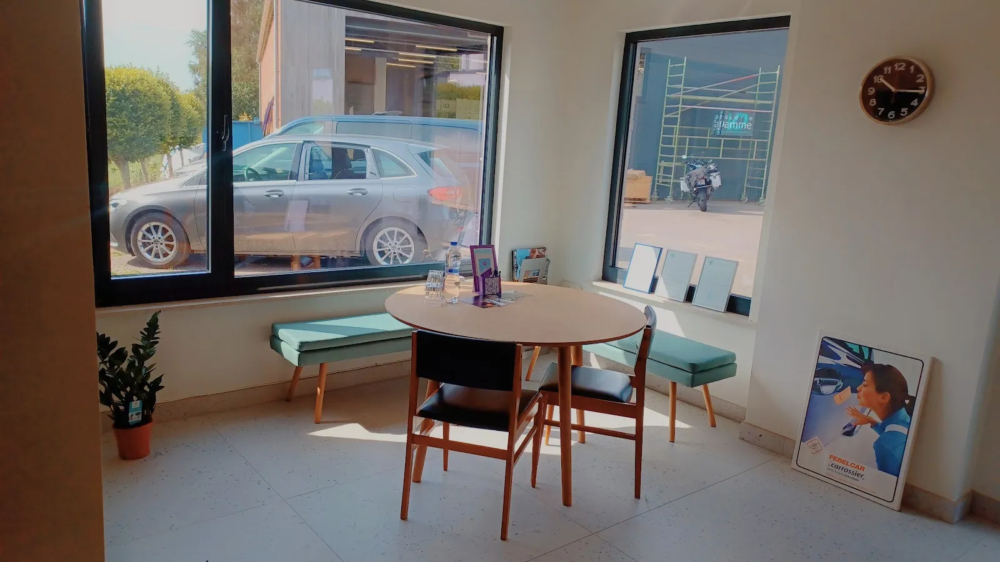
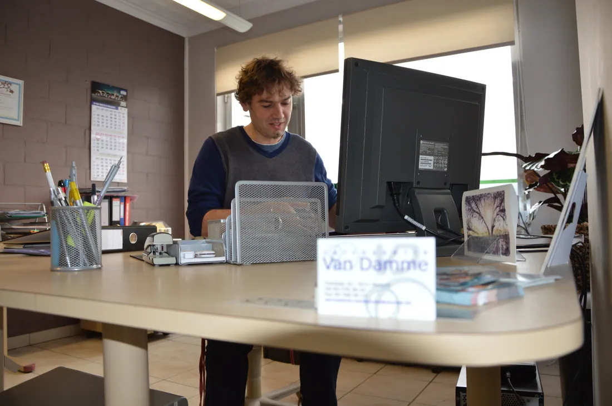
Carrosserie Van Damme ging al drie keer over van vader op zoon. Vandaag staan Christof en Eveline aan het roer, met dezelfde aanpak als vroeger: eerlijk advies, goed werk en tijd voor de mensen.
Voor ons horen klanten en medewerkers bij dezelfde familie. Daarom krijg je hier geen nummertje, maar iemand die je opvolgt van het eerste bestek tot je je sleutels terugkrijgt.
★★★★★“Mijn auto was binnen één dag hersteld, en ik werd heel goed op de hoogte gehouden. Als extraatje hebben ze mijn wagen ook nog eens helemaal proper gemaakt, zowel vanbinnen als vanbuiten.”
★★★★★“Na een klein ongevalletje hebben ze ons goed begeleid in het hele proces van begin tot einde. En goed werk afgeleverd als eindresultaat!”
★★★★★“Zeer vriendelijk en snel geholpen. Leveren mooi werk af. Hebben ook alles met de verzekering geregeld.”
Voor een bestek kan je elke werkdag tussen 9u en 11u gewoon binnenspringen. Liever een vast moment? Bel even op voorhand.
Tuinlaan 31/a, 9111 Belsele
info@carrosserievandamme.be
Gsm Christof: 0468 51 22 18
| Maandag | 8:00 - 12:00 · 13:00 - 18:00 |
| Dinsdag | 8:00 - 12:00 · 13:00 - 18:00 |
| Woensdag | 8:00 - 12:00 · 13:00 - 18:00 |
| Donderdag | 8:00 - 12:00 · 13:00 - 18:00 |
| Vrijdag | 8:00 - 12:00 · 13:00 - 16:30 |
| Zaterdag | Gesloten |
| Zondag | Gesloten |
Ik maakte deze demo voor jullie om te tonen wat er kan. Na een kort gesprek maak ik er iets veel persoonlijkers van, helemaal naar jullie wens.
Vrijblijvend. Ik kom langs of we bellen.
Op maat, op jullie eigen domein.
Geen voorschot. Jullie betalen pas als alles klaar is.
Hosting, domeinnaam en kleine wijzigingen, zoals nieuwe openingsuren.
Omdat een voorbeeld meer zegt dan een mail. Zo zien jullie meteen wat er kan, en het kost jullie niets.
Nee. Het gesprek is vrijblijvend. Vinden jullie het niks, dan is het daarmee gedaan.
Na ons gesprek staat jullie site binnen 10 tot 14 dagen online.
Zeker. Jullie domeinnaam kan gewoon blijven, de nieuwe site komt in de plaats van de oude.
Nee, dat doe ik op basis van ons gesprek. Eigen foto's zijn mooi meegenomen, maar niet nodig om te starten.